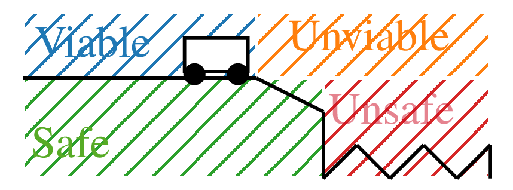
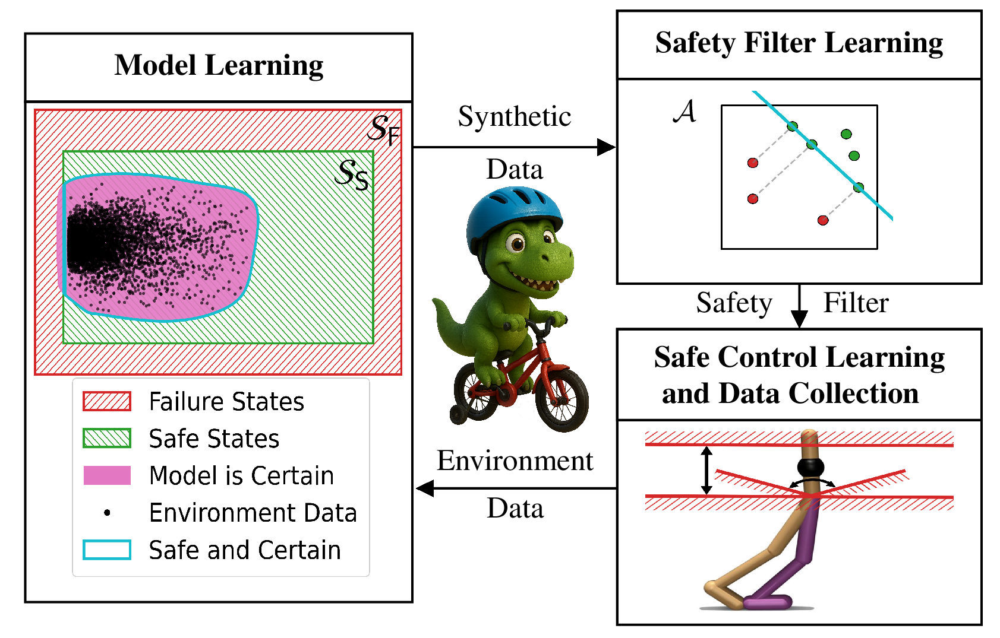
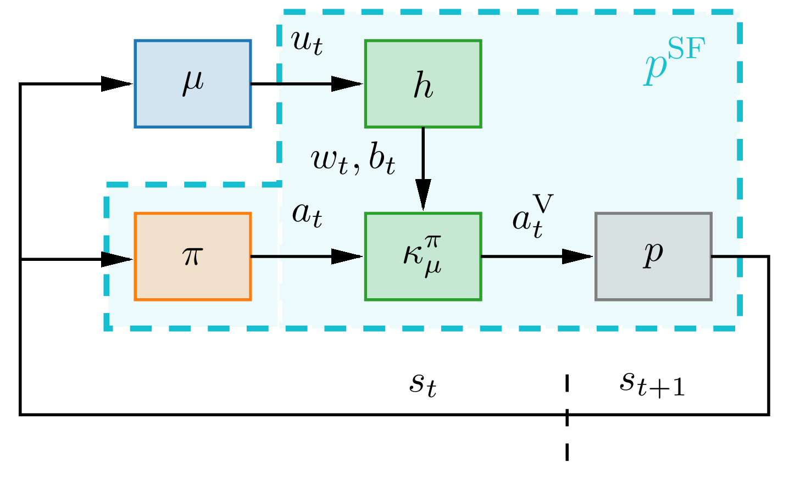
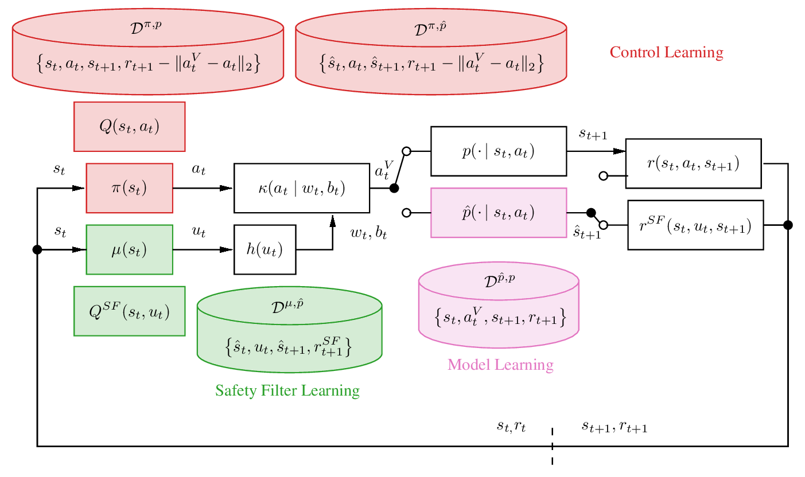
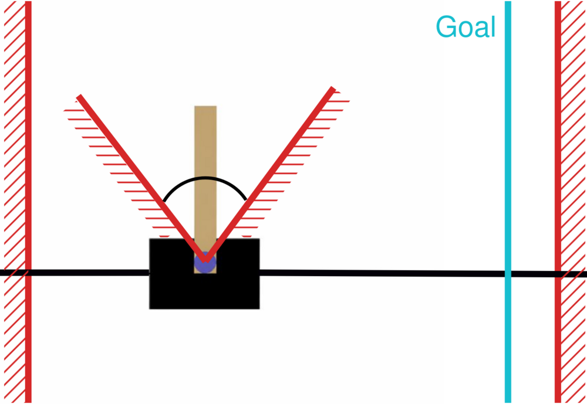
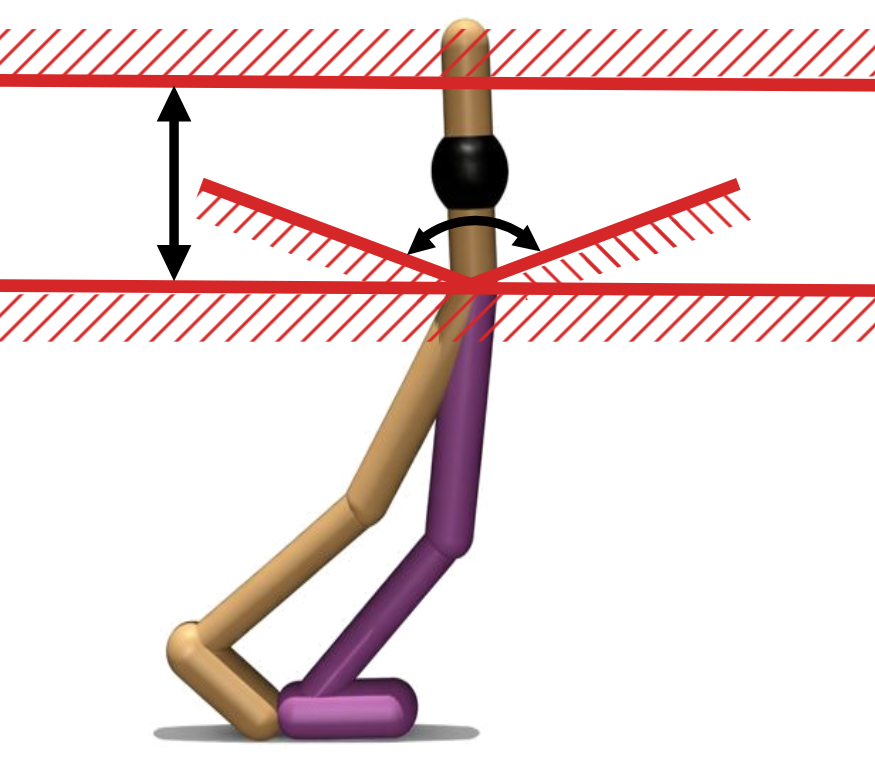
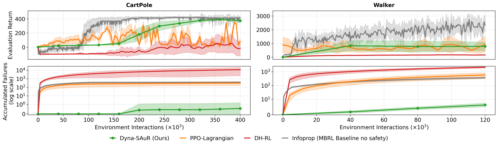
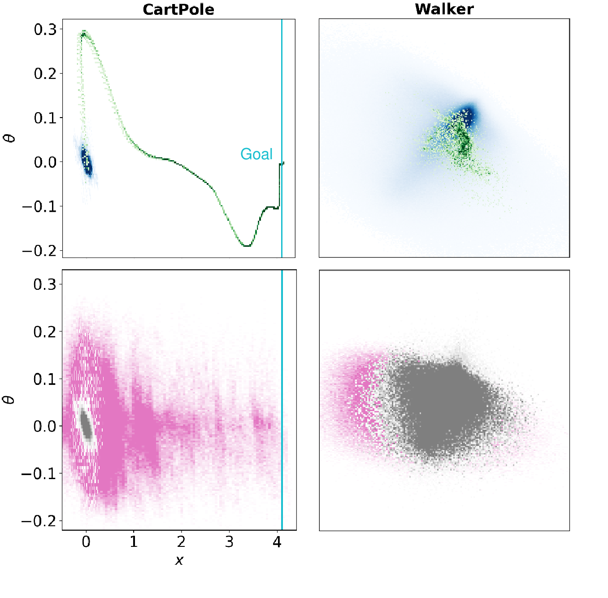
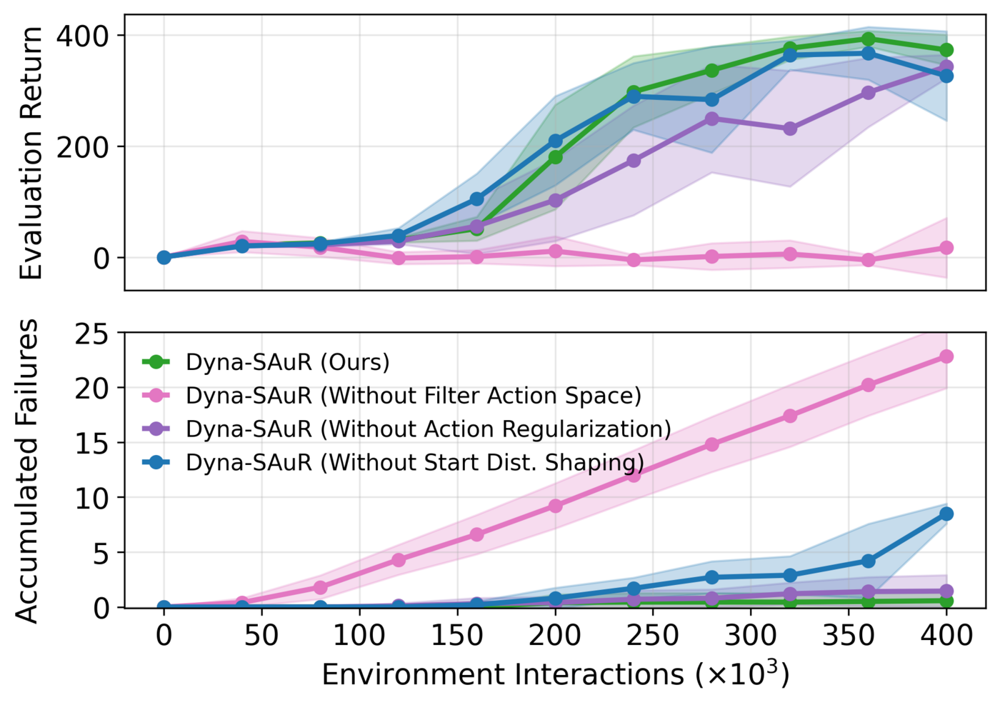
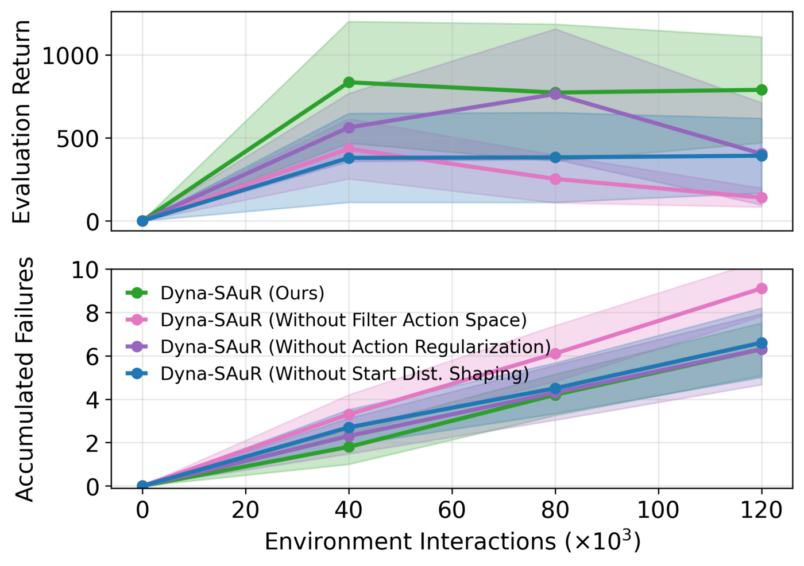

TL;DR
Dyna-SAuR learns a control policy and a scalable safety filter at the same time. It needs only a notion of failure and some initial data. An uncertainty-aware dynamics model lets the filter be trained entirely on synthetic rollouts, so it avoids both failures and regions where the model is uncertain. Deploying the filter lets the agent explore safely. The new data expands the certain region, and the filter becomes less conservative in each iteration.
Abstract
Safety is a key problem in reinforcement learning, especially during exploration. While safety filters are promising to address this issue, they are ill-suited for high-dimensional systems with unknown dynamics. We propose Dyna-style Safety Augmented Reinforcement Learning (Dyna-SAuR), a novel algorithm that learns a control policy as well as a scalable safety filter requiring minimal domain knowledge by leveraging a learned uncertainty-aware dynamics model. A novel filter learning formulation enforces to avoid failures and areas of high model uncertainty. As joint deployment of the control policy and filter allow to safely collect data and improve the dynamics model, certain areas grow and filter conservatism decreases over time. Dyna-SAuR reduces failures compared to state-of-the-art methods by two orders of magnitude on goal-reaching CartPole and MuJoCo Walker.
Video chapters
The problem
Being safe now does not mean staying safe
Failures are easy to specify: a robot lying on the ground, or a cart crashing at the end of its track. Their complement is the set of safe states. But some safe states inevitably lead to failure. On the slope, the cart's engine is too weak to climb back, so it crashes into the unsafe set whatever controls are applied.
The more informative distinction is between viable states, from which a policy can keep the system safe, and unviable states that are still safe but will inevitably transition into unsafe states. Classical safety filters often draw this line with substantial domain knowledge and scale poorly with dimension. Dyna-SAuR learns it from data, without access to the true dynamics.

Method
Learn a safety filter where the model can be trusted
Whether failures follow can be checked in synthetic rollouts of a learned dynamics model. The model, however, is only reliable where it has seen data. Dyna-SAuR therefore trains a safety filter that avoids both unsafe and uncertain regions, and grows the trusted region over time.

-
1
Model learning
A probabilistic ensemble $\hat p$ is trained on environment data. Its epistemic uncertainty defines the sufficiently certain set
$$\mathcal{E} := \{(s_t, a_t) \in \mathcal{S} \times \mathcal{A} \mid \mathbb{H}(\hat S_{t+1}) \le \lambda_1\}.$$ -
2
Safety filter learning
A filter policy $\mu$ is trained purely in model rollouts to keep the system inside the certain safe set $\mathcal{S}_\mathrm{S}(\mathcal{E})$, until it passes a filter evaluation.
-
3
Safe control learning & data collection
The control policy $\pi$ is trained under the fixed filter on model and environment data. The new data enlarges $\mathcal{E}$, so the next filter is less restrictive.
input $\mathcal{D}_0^{\hat p, p}$, randomly initialized $\hat p_0$, $\pi_0$ and $\mu_0$
- for $j \in \{1,\dots,J\}$ Dyna-SAuR iterations do
- Train dynamics model $\hat p_j$ using data from $\mathcal{D}_{j-1}^{\hat p, p}$
- while filter evaluation not successful do
- Train filter policy $\mu_j$ using $\hat p_j$ and $\pi_{j-1}$
- Evaluate filter policy $\mu_j$
- end while
- Train control policy $\pi_j$ using $\hat p_j$ and $\mu_j$ and collect env. data $\mathcal{D}_j^{\hat p, p}$
- end for
output $\hat p_J,\ \mu_J,\ \pi_J$
The safety filter MDP
To learn the filter with RL, Dyna-SAuR defines a safety filter MDP. Its dynamics $p^\mathrm{SF}$ wrap the control policy $\pi$, the learned model $\hat p$, a bijective transform $h$ and the filter $\kappa$. At state $s_t$, $\pi$ proposes $a_t$. The filter policy outputs a hyperplane action $u_t$, which $h$ maps to a hyperplane $(w_t, b_t)$. The filter then projects $a_t$ onto the closest viable action:
$$a_t^\mathrm{V} = \arg\min_{a\in\mathcal{A}} \lVert a - \pi(s_t)\rVert_2 \;\; \text{s.t.}\;\; w_t^\top a \ge b_t .$$
Show the detailed block diagram of all three learning problems

Key ingredient
A compact hyperplane action space
Learning hyperplane parameters $(w,b)$ directly is unbounded and over-parameterized, since $c\,w^\top a \ge c\,b$ describes the same hyperplane for any $c>0$. It also does not guarantee that the hyperplane intersects the action space. Dyna-SAuR's filter policy instead acts in the open unit ball
$$\mathcal{U} = \{u \in \mathbb{R}^{n_\mathcal{A}} \mid 0 < \lVert u\rVert_2 < 1\},$$which a bijection maps onto all hyperplanes intersecting $\mathcal{A} = [-1,1]^{n_\mathcal{A}}$:
$$\begin{gathered} h(u) = (w,b) \quad\text{with}\\[2pt] w = \frac{u}{\lVert u\rVert_2},\qquad b = \big(2\lVert u\rVert_2 - 1\big)\lVert w\rVert_1 . \end{gathered}$$The direction of $u$ sets the normal of the hyperplane, and its magnitude sets how restrictive it is. Near $0$ almost every action is viable. Near $1$ most actions are rejected. This minimal search space is what makes data-driven filter learning scale.
Try it
Move the filter action $u$ on the left with the sliders. On the right, the resulting hyperplane $h(u)$ filters five random control actions. Potentially unsafe proposals (red) are projected onto the viable half-space (green).
Increase $\lVert u\rVert_2$ and watch the viable region shrink.
Reward: stay certain & safe
$$r^\mathrm{SF} = \begin{cases} 1, & \text{if } (s_t, a_t^\mathrm{V}) \in \mathcal{S}_\mathrm{S}(\mathcal{E}) \\[4pt] -\dfrac{1}{1-\gamma_\mathrm{SF}}, & \text{otherwise} \end{cases}$$Episodes terminate when $\mathcal{S}_\mathrm{S}(\mathcal{E})$ is left. The filter value then lower-bounds the expected time to failure.
Least restrictive projection
$$\max_{\mu \in \mathrm{M}}\; Q^\mathrm{SF}\big(s,\mu(s)\big) - c\,\lVert\mu(s)\rVert_2$$Since $\lVert u\rVert_2$ measures restrictiveness, the regularizer keeps as many actions viable as possible.
Data shaping
$$\rho_0^\mathrm{SF} = \nu_1\rho_0 + \nu_2\,\mathrm{U}(\mathcal{T}_\mathrm{F}) + \nu_3\,\mathrm{U}(\mathcal{T}_\mathrm{G})$$Start states oversample failed and high-return rollouts. Pink-noise perturbations of the previous policy cover the policies the filter must handle.
Experiments
Comparable returns, orders of magnitude fewer failures
We evaluate on goal-reaching CartPole ($\mathcal{S}\subseteq\mathbb{R}^4$, $\mathcal{A}\subseteq\mathbb{R}$), which must leave its equilibrium and reach a goal at the physical limits, and on MuJoCo Walker ($\mathcal{S}\subseteq\mathbb{R}^{17}$, $\mathcal{A}\subseteq\mathbb{R}^6$), a system with discontinuous contact dynamics. We compare against PPO-Lagrangian, DH-RL, and Infoprop-Dyna (MBRL without safety). All results are averaged over 10 seeds with 99% confidence intervals.



Goal-reaching CartPole
MuJoCo Walker

Exploring beyond the initial data
Top: initial data $\mathcal{D}_0^{\hat p,p}$ (blue) vs. trajectories of the final filtered policy (green). Bottom: initial certain set $\mathcal{E}_0$ (grey) vs. final certain set $\mathcal{E}_J$ (pink).
In CartPole (projected onto $x \times \theta$), the initial data lies far from the goal. The certain set has to expand substantially before high-return policies are allowed, and with at most one failure per seed, this gradual expansion works as intended. In Walker (first two principal components), the expansion is less pronounced. Expanding $\mathcal{E}$ efficiently in high-dimensional spaces remains a limitation.
Ablation of design choices


- Without the filter action space. Learning $(w,b)$ directly, as in DH-RL, fails to produce a reliable filter or high returns. The compact parameterization is central.
- Without action regularization. The filter stays safe but becomes overly restrictive, so control performance drops.
- Without start-state shaping. Too little data near the filter's weak spots leads to noticeably more failures and slightly lower returns.
- Full Dyna-SAuR. Only the combination yields strong results in both performance and safety.
Citation
BibTeX
@inproceedings{eisele2026dynasaur,
title = {Dyna-Style Safety Augmented Reinforcement Learning:
Staying Safe in the Face of Uncertainty},
author = {Eisele, Artur and Frauenknecht, Bernd and
Solowjow, Friedrich and Trimpe, Sebastian},
booktitle = {Advances in Neural Information Processing Systems (NeurIPS)},
year = {2026}
}